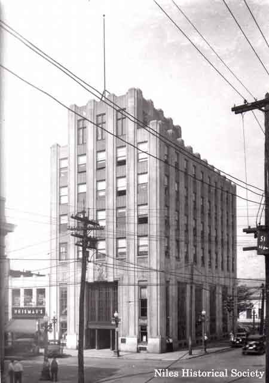
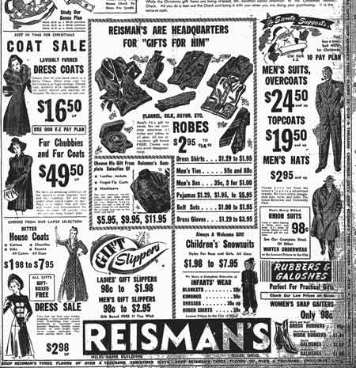
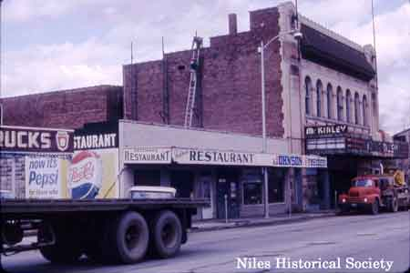
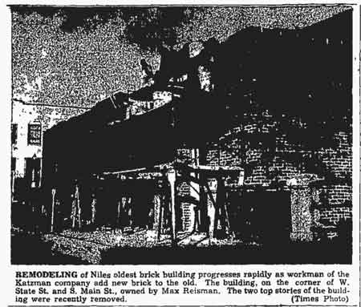
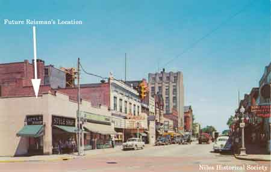
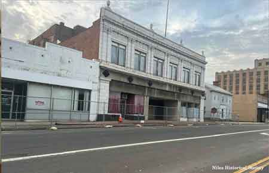
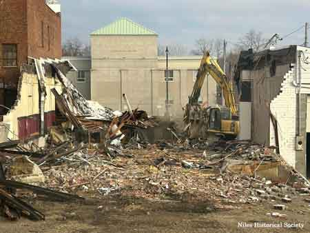

Reismans
{kind=link}

Reisman's store had three floors offering clothing goods and was next to the Niles Bank Building, Niles tallest building built in 1930.
{kind=link}

A Reisman's store advertisement that appeared in the December 5, 1941 Niles Daily Times newspaper. Reismans was still operating out of the store next to the Niles Bank Building at this time.
{kind=link}

1964 photo shows the previous location of McCallister's Dairy on North Main Street next to the McKinley Theatre.

One of the oldest landmarks in downtown Niles, the upper floors were used years ago as a meeting hall at one time or another by various organizations including the Masonic and Odd Fellows lodges.
{kind=link}

Niles Daily Times photo December 12, 1953.

View of the building that had the top two stories removed and became the new location of Reisman's.

1930 aerial view of the building and home located on site at the northwest corner of State Street and Main Street.
{kind=link}

In 1954 the Style Shop and a grocery store occupied the future site of Reisman’s.

1972 urban renewal aerial view of Reisman’s furniture store showing the changes from the original building shown above.
{kind=link}

In late October 2023 the two corner buildings, Reisman's and the Robins Theater, were cordoned off prior to their demolition in 2024.
{kind=link}
